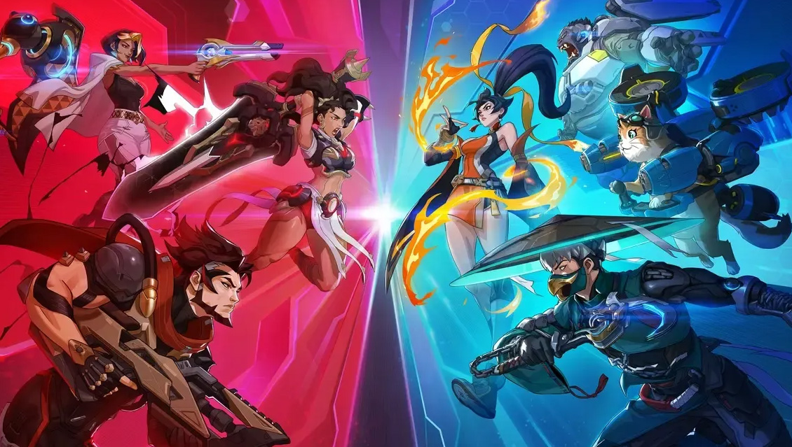

Overwatch 2026 Review: Blizzard redemption?
created: 16 March 2026
Overwatch was released in 2016 and immediately made history by winning Game of the Year. However, as with many live-service games, long-term success proved more complicated. Over the years, issues like monetization and lack of meaningful content updates frustrated players.
When Overwatch 2 launched on August 10, 2023, as a free-to-play title, it was expected to revitalize the franchise. Instead, it created division within the community. The promised PvE mode was canceled, and many fans felt the game didn’t change enough to justify being called a sequel.
Fast forward to February 10, 2026, Blizzard made another bold move: removing the “2” and returning the game’s name to simply Overwatch. Their goal? To turn it into a “forever game,” avoiding future numbered sequels.
Reactions have been mixed. Some players are optimistic, others are skeptical, and many are simply confused. Personally, I see this as Blizzard trying to redefine the direction of the game—and honestly, I kind of like it.
I’m Steel Charmer, and this is more of a rant than a review about Overwatch’s bold new steps.
Gameplay
Coming back to Overwatch, the first system that really stood out to me is the perk system.
Players now choose between two perks at two different stages: minor and major. This adds a layer of decision-making that wasn’t present before. For example, Zenyatta can choose between:
- A lifesteal effect tied to his Discord Orb
- Or the ability to hover for a short duration
This system opens up different playstyles. You can build more supportive, team-oriented setups or go aggressive and take more angles. It makes even familiar heroes feel fresh again.
Of course, not all perks are perfectly balanced yet. Some options clearly outperform others. But this is something Blizzard can refine over time, and the foundation itself is very promising.
Characters
In this 2026 reboot update, Overwatch introduces five new heroes: Jetpack Cat, Anran, Mizuki, Emre, and Domina. I want to highlight two of them:
Anran
A DPS hero built around fire and damage-over-time mechanics. She plays as a flanker, with abilities like:
- Inferno Rush: a sprint that ignites enemies
- Dancing Blaze: an area attack that burns groups
Her ultimate is especially interesting:
- If alive: she dives from the sky, dealing massive AoE damage
- If dead: she resurrects and still triggers an explosion
This dual-state ultimate is a creative twist that adds unpredictability to fights.
Jetpack Cat
Yes, literally a cat with a jetpack, and surprisingly one of the most exciting support heroes right now.
- He can fly permanently
- Teammates can grapple onto him to reposition
This grapple mechanic has already become a favorite in the community, with players experimenting in creative ways, especially when combined with other ultimates.
His ultimate allows grappling enemies instead, turning mobility into disruption.
Overall, Blizzard is clearly experimenting more with hero design, and it shows. These kits feel fresh and encourage creativity.
New Event System
One of the best additions is the Talon vs Overwatch event, which ties directly into the game’s lore.
Players choose a side(Talon or Overwatch) and complete daily missions. Rewards include loot boxes of varying rarity, which already feels more generous than previous systems.
At the end of each week, the winning side determines global rewards. For example, players receive a special Echo skin:
- Red if Talon wins
- Blue if Overwatch wins
This system creates a sense of community participation. It’s not just grinding, it feels like contributing to something bigger.
Maps
Map design hasn’t changed drastically in layout, but the world-building has improved significantly.
Maps now reflect the outcome of ongoing events. If Talon wins, you might see:
- Talon banners across the map
- Damaged buildings
- A more oppressive atmosphere
This is a subtle but effective way to make the game world feel alive and reactive.
Conclusion
So, is this Blizzard’s redemption?
Not completely, but it’s definitely a step in the right direction.
Overwatch in 2026 feels more experimental, more flexible, and more connected to its own world. Systems like perks, dynamic events, and creative hero designs show that Blizzard is finally willing to take risks again.
There are still issues. Balance isn’t perfect, and some players may never forgive the broken promises of the past. But for returning players like me, the game feels fresh enough to give it another chance.
For the first time in a while, Overwatch doesn’t feel stuck—it feels like it’s moving forward.
And honestly? That might be exactly what it needed.
Steel Charmer
Gamer who loves to try any game, and has been gaming since PS2 era.